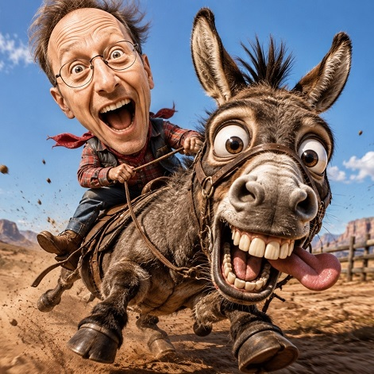

Cinematica de jinete de animales con IA

🐾 Prompt Maestro: "Animal Rider Cinematic"
Este prompt transforma a la persona de la fotografía en el protagonista de una escena épica, hiperrealista y extremadamente divertida, montando el animal que el usuario elija. Mantiene la identidad facial de la persona y crea una caricatura con cabeza gigante, cuerpo pequeño y una expresión llena de humor, mientras adapta automáticamente la ropa, el escenario, el clima y todos los efectos visuales al animal seleccionado.
Gracias a su sistema de adaptación inteligente, cada imagen es única y coherente: si eliges un camello aparecerás cruzando el desierto, si eliges un tiburón estarás surcando el océano y si eliges un dragón volarás sobre un mundo fantástico, todo con calidad cinematográfica.
Es muy sencillo:
- Adjunta una fotografía donde el rostro de la persona se vea con claridad.
- En el prompt, reemplaza el campo "ANIMAL ELEGIDO" por el animal que desees (por ejemplo: caballo, burro, jirafa, capibara, tiburón, dragón, T-Rex, unicornio, etc.).
- Genera la imagen.
El prompt se encargará automáticamente de crear una escena divertida y espectacular, adaptando la vestimenta, el entorno, la acción y los efectos especiales al animal elegido, manteniendo siempre a la persona como protagonista absoluto y conservando fielmente sus rasgos faciales.
Usa EXCLUSIVAMENTE los rasgos faciales de la fotografía adjunta para recrear a la misma persona. El usuario indicará el animal que desea montar: ANIMAL ELEGIDO: [ESCRIBIR AQUÍ EL ANIMAL] Convierte a la persona en el protagonista absoluto de una escena extremadamente divertida y cinematográfica. Mantén SIEMPRE estas características: • caricatura hiperrealista • cabeza exageradamente grande (aprox. 2,5 veces el tamaño normal) • cuerpo pequeño • expresión exageradamente cómica • enorme sonrisa • boca completamente abierta • dientes visibles • ojos muy abiertos • mejillas estiradas por la risa • cabello movido violentamente por el viento • manos sujetando con fuerza al animal • pose llena de energía • sensación de velocidad extrema El animal debe convertirse en una versión caricaturesca hiperrealista del animal elegido. Debe verse: • extremadamente expresivo • ojos enormes y saltones • sonrisa gigantesca • dientes enormes • lengua saliendo por el costado • expresión completamente loca • galopando, corriendo, saltando, nadando o desplazándose según corresponda • movimiento exagerado • las patas, alas, aletas o extremidades suspendidas en plena acción • sensación de máxima velocidad NO debe ser un animal normal. Debe parecer salido de una película de animación de alto presupuesto. IMPORTANTE: La vestimenta del personaje debe adaptarse automáticamente al animal elegido y al entorno. Ejemplos: caballo → vaquero camello → beduino elefante → explorador reno → ropa invernal tiburón → neopreno delfín → traje acuático canguro → aventurero australiano panda → ropa inspirada en Asia águila → aviador avestruz → safari búfalo → cowboy dragón → armadura medieval fantástica unicornio → vestimenta mágica jirafa → safari africano gorila → explorador de selva etc. El escenario también debe cambiar automáticamente según el animal. Debe ser un paisaje espectacular y coherente. Ejemplos: caballo → praderas verdes camello → dunas del Sahara elefante → sabana africana reno → montañas nevadas tiburón → océano tropical orca → mar abierto panda → bosque de bambú mono → selva dragón → montañas volcánicas avestruz → desierto africano águila → picos montañosos delfín → mar cristalino lobo → bosque nevado oso → bosque otoñal rinoceronte → sabana canguro → Outback australiano etc. La escena debe transmitir: aventura locura humor movimiento energía acción dinamismo Diversión extrema. Agregar efectos cinematográficos: polvo, barro, agua, nieve, hojas, arena, salpicaduras o partículas dependiendo del entorno. Cabello, ropa y accesorios movidos por el viento. Profundidad de campo. Motion blur únicamente en el entorno. Iluminación cinematográfica. Colores vivos. Ultra detallado. Calidad Pixar + fotografía hiperrealista. Composición dinámica. Gran angular. Plano completo. El personaje y el animal deben ocupar aproximadamente el 85% del encuadre. La cara de la persona debe ser perfectamente reconocible respecto a la fotografía original. Formato 16:9. Hiperrealista. Ultra HD. 8K. Obra maestra. Humor cinematográfico.